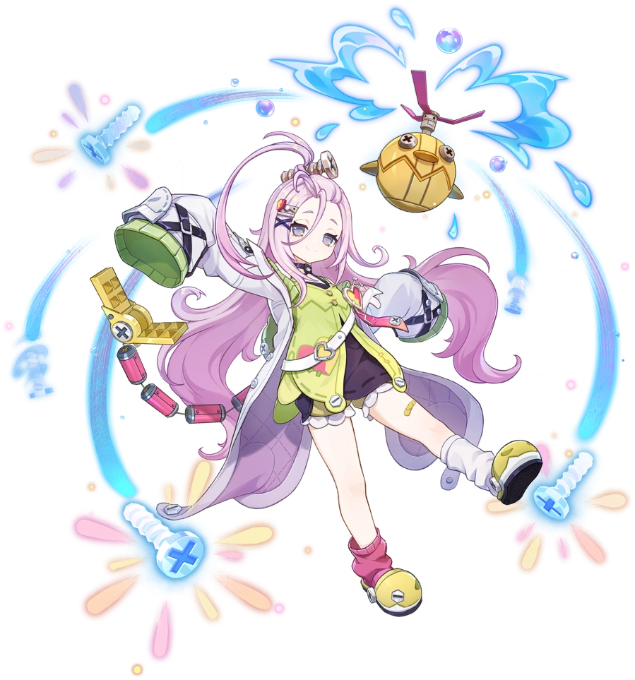

Механик-вундеркинд Нод-Края. Любит интересные механизмы и сладости.

Айно — механик-вундеркинд Нод-Края и основательница мастерской крумкаке «Дзынь-Клац». Именно она создала Инеффу.
Её титул — «Грохочущие чудо-машины», созвездие — Грохочущий Ларец.